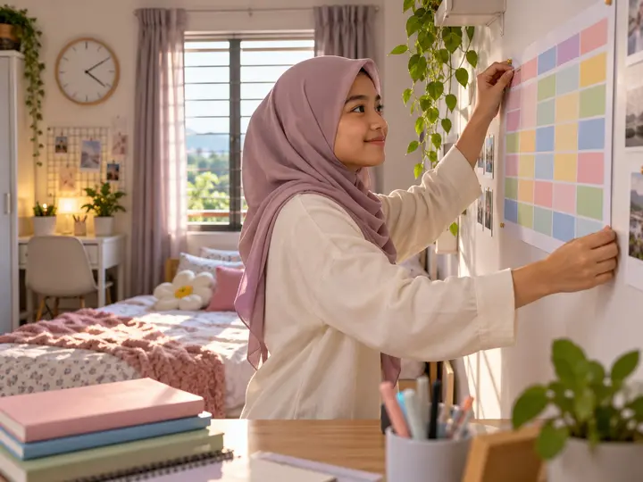
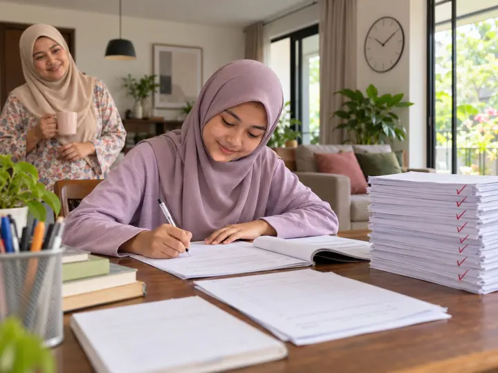
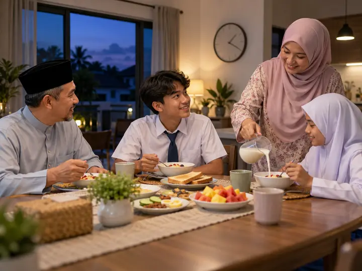
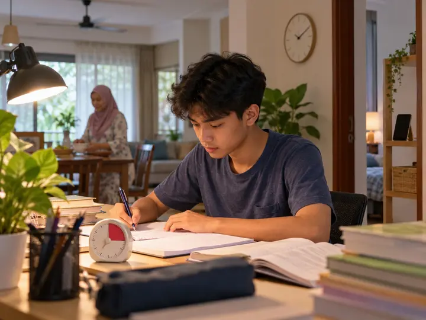

Untuk mak ayah calon SPM (dan remaja 13+) yang…
Ulangkaji Lebih Fokus, Masuk Dewan SPM Lebih Tenang
SYNAX, tablet kunyah dengan 3 mineral fosfat untuk sokong fungsi normal sistem saraf remaja yang sedang berdepan ulangkaji paling berat dalam hidup mereka. 2 biji pagi + 2 biji malam.
 📐 Ingat formula
⏰ Fokus ulangkaji
📐 Ingat formula
⏰ Fokus ulangkaji
“Anak nampak perubahan selepas 2 botol. Rajin belajar, semangat ke sekolah, daya ingatan makin baik.”C**A · Pakej 4+1 · ★★★★★
Saya Nak SYNAX Untuk Musim SPM → Mula RM20 sebotol · COD tersedia · Pemulangan 30 hariMusim SPM memang mencabar…
Anak Remaja Anda Macam Ni?
Tekan mana-mana yang anda (atau anak sendiri) rasa. Remaja pun boleh cuba. 😉
Remaja anda bukan malas. Beban SPM memang berat: 9–10 subjek, kertas panjang, masa terhad. Yang mereka perlukan ialah rutin ulangkaji yang boleh bertahan sampai hari peperiksaan.
Apa sebenarnya jadi dalam otak masa ulangkaji?
Ingat Fakta = Berjuta Isyarat Saraf Setiap Saat
Bila remaja baca, faham & ingat semula jawapan dalam dewan peperiksaan, otaknya bergantung pada isyarat saraf yang laju & stabil. Mineral asas memainkan peranan.
Kalium bantu isyarat saraf bergerak. Bila kurang cekap, cepat penat bila kena fokus lama, macam sesi ulangkaji 2 jam.
Kalsium terlibat di synapse, tempat maklumat berpindah antara sel saraf. Inilah asas proses mengingat formula & fakta.
Magnesium jadi “brek” semula jadi untuk saraf. Penting bila remaja gelabah & resah menjelang peperiksaan.
Bila stamina ulangkaji jatuh, kesannya pada…
Keputusan trial & SPM
Faham dalam kelas, tapi blank masa jawab soalan dalam dewan.
Masa ulangkaji
Duduk lama depan buku, tapi hasil sedikit. Silibus tak sempat habis.
Stres & emosi
Rasa tertinggal buat remaja makin cemas, dan cemas buat fokus makin susah.
Tabiat tak sihat
Kopi pekat & minuman bertenaga untuk berjaga malam, esok pagi lesu dalam kelas.
Pilihan masa depan
Keputusan SPM tentukan peluang matrikulasi, asasi, diploma & biasiswa.
Setiap minggu sebelum SPM sangat berharga. Mula rutin yang betul SEKARANG, bukan seminggu sebelum exam.
Ramai calon cuba macam-macam cara
Tapi Bandingkan Dua Cara Ni…
Cara “Last Minute”
Penat, mahal, hasil tak menentu…
- ✕Berjaga sampai 3 pagi dengan kopi pekat
- ✕Minuman bertenaga tinggi gula & kafein
- ✕Tuisyen intensif RM300–RM800 sebulan
- ✕Skip sarapan sebab terlewat bangun
- ✕Hafal semua seminggu sebelum exam
Akhirnya, blank dalam dewan…
Rutin + SYNAX
2 biji pagi, 2 biji malam. Teruskan study!
- ✓3 mineral fosfat dalam satu tablet kunyah
- ✓Tiada kafein, tiada pemanis tiruan
- ✓Hanya ±RM2.16 sehari dengan Pakej 4+1
- ✓Senang bawa ke sekolah, tuisyen & asrama
- ✓Masuk terus dalam jadual ulangkaji harian
✦ Memperkenalkan…
SYNAX Chewable Tablet
Suplemen tablet kunyah dengan gabungan Kalsium Fosfat, Kalium Fosfat & Magnesium Fosfat untuk dijadikan sebahagian rutin harian anak.
APA YANG ADA
- • Kalium Fosfat
- • Kalsium Fosfat
- • Magnesium Fosfat
- • Bahan semula jadi
APA ANAK RASA
- • Manis buah, sedap dikunyah
- • Kunyah, tak perlu telan pil
- • Muat dalam beg sekolah & asrama
🎁 Apa yang anda dapat:
- SYNAX tablet kunyah (30 biji sebotol)
- Arahan pengambilan ikut umur pada label
- Khidmat pelanggan WhatsApp terus
- Pilihan COD & COD Time Gaji
- Pemulangan percuma dalam 30 hari
Bukan campuran sembarangan
3 Mineral, 3 Peranan Untuk Saraf Anak
Tekan setiap mineral untuk tengok peranannya.

Isyarat saraf bergerak melalui pertukaran ion kalium-natrium merentasi membran sel saraf, asas kepada isyarat elektrik dalam otak.
Penghantaran isyarat kurang cekap. Anak nampak lambat bertindak balas, cepat penat bila kena fokus lama.
Isyarat saraf dihantar dengan lebih cekap dan stabil.

Kalsium mencetuskan pelepasan neurotransmitter di synapse, titik pertemuan antara sel saraf, asas kepada proses ingatan.
Penyampaian maklumat antara sel saraf kurang lancar. Proses mengingat dan memahami jadi lebih mencabar.
Synapse berfungsi dengan lebih baik, menyokong proses pembelajaran dan ingatan.

Magnesium bantu kawal keterujaan saraf, macam “brek” semula jadi supaya sistem saraf tak terlalu bertindak balas.
Saraf lebih mudah “over-reactive”. Anak nampak resah, susah nak tenang untuk fokus.
Sistem saraf lebih stabil, membantu anak kekal tenang dan fokus.
Penerangan berdasarkan peranan umum mineral dalam badan manusia. SYNAX ialah suplemen, bukan ubat, dan tidak bertujuan mendiagnosis, merawat atau menyembuhkan sebarang keadaan.
Setiap remaja berbeza, tapi ini yang ramai kongsi
Perubahan Yang Mula Terasa Bila Konsisten

MINGGU 01Mula 🚀
Rutin 2 biji pagi + 2 biji malam masuk dalam jadual. Tak perlu diingatkan lagi.
Stabil ⚡
Ramai kongsi kurang mengantuk dalam kelas & masa sesi ulangkaji malam.

MINGGU 03–04Fokus 🎯
Sesi ulangkaji lebih produktif. Lebih banyak kertas latihan berjaya disiapkan.
Yakin 🎓
Rutin dah jadi tabiat. Masuk musim trial & SPM dengan kepala yang lebih tenang.
Bayangkan menjelang SPM, anak anda:
- ✨ Ulangkaji 2 jam, dan betul-betul ingat apa yang dibaca.
- ✨ Siapkan kertas soalan tahun lepas tanpa disuruh.
- ✨ Tidur cukup, bangun segar untuk kelas pagi.
- ✨ Masuk dewan peperiksaan dengan tenang & yakin.
Ini bukan janji ajaib atau jaminan gred. Ia hasil rutin yang konsisten bersama tidur cukup, makan seimbang & teknik ulangkaji yang betul. Pengalaman setiap individu berbeza.
Kisah sebenar pelanggan
Apa Kata Mereka Yang Dah Amalkan?
Lebih 40,000 testimoni dari mak ayah seluruh Malaysia. Ini antaranya.
📸 Tangkap layar sebenar dari pelanggan (tekan untuk besarkan)

“Makin rajin buat latihan cikgu bagi”

“Tak mudah lesu dalam kelas”

“Cepat fokus bila cikgu mengajar”

“Rajin buat kerja sekolah”
*Pengalaman setiap pelanggan berbeza dan bukan jaminan hasil yang sama. Tekan & tahan baris testimoni untuk berhenti.
Bayangkan sesi ulangkaji malam ni…
Bukan Kopi Ketiga. Bukan Air Tin Bertenaga.
Buka botol, ambil 2 biji, kunyah, terus buka buku. Rutin 10 saat yang tak ganggu jadual.
Manis buah
Sedap dikunyah, tak rasa “ubat”, tiada kafein.
Mudah dibawa
Muat dalam poket beg. Sesuai untuk pelajar asrama.
Masuk dalam jadual
2 biji lepas sarapan, 2 biji sebelum sesi ulangkaji malam.
Satu hari calon SPM
Pelan Harian Calon SPM + SYNAX
Tekan setiap waktu. Ada tip ulangkaji yang terbukti berkesan sekali.

🌅 Lepas sarapan · 2 biji
Jangan skip sarapan. Kunyah 2 biji SYNAX lepas makan, sebelum bergerak ke sekolah.
🏫 Waktu sekolah & kelas tambahan
Masa paling penting untuk faham konsep. Tanya cikgu terus bila tak faham, jangan simpan untuk malam.

📖 Ulangkaji malam · 2 biji
Kunyah 2 biji SYNAX sebelum mula sesi ulangkaji malam.
📝 Hari peperiksaan
Teruskan rutin seperti biasa: tidur awal, sarapan, 2 biji SYNAX pagi. Jangan cuba benda baru pada hari exam.
Cara yang betul adalah kunci
Berapa Biji Sehari?
Ikut umur. Rujuk juga arahan pada label produk.
☀️🌙 Bila nak ambil?
2 biji pagi + 2 biji malam
Pagi selepas sarapan, malam sebelum sesi ulangkaji. Kunyah sampai hancur.
📦 Satu botol tahan berapa lama?
30 biji ÷ 4 biji = ±7 hari
Sebab itu remaja paling sesuai ambil Pakej 4+1 (5 botol), cukup untuk ±37 hari, lebih 5 minggu rutin.
Supaya anda beli dengan tenang
SYNAX Untuk Siapa?
✅ Sesuai jika…
- Remaja 13 tahun ke atas, terutamanya calon PT3/UASA & SPM
- Pelajar asrama yang perlukan rutin ringkas & mudah dibawa
- Mak ayah nak tambah sokongan nutrisi sepanjang musim peperiksaan
- Sanggup amalkan konsisten 2 pagi + 2 malam
❌ BUKAN untuk anda jika…
- Harap “pil pandai” tanpa perlu ulangkaji
- Nak mula seminggu sebelum SPM dan harap keajaiban
- Nak gantikan rawatan doktor atau kaunseling
- Ada alahan pada mana-mana bahan (semak label)

🏛️ Surat Pengelasan Produk KKM
SYNAX diklasifikasikan sebagai produk makanan (tablet kunyah), bukan ubat. Sebab itu ia tidak memerlukan pendaftaran NPRA. Tekan untuk lihat surat.
Jika mahu mencuba rutin ini secara konsisten…
Pilih Tempoh Rutin Yang Sesuai
Pilih pakej berdasarkan tempoh penggunaan yang sesuai.
Nak cuba dahulu tanpa komitmen pakej besar? Mulakan dengan 1 botol.
Langkah terakhir
Lengkapkan Tempahan Anda
Isi maklumat di bawah dan buat pesanan terus. Tak perlu buat akaun.
Pesanan Diterima
Terima kasih. Pesanan anda sudah masuk dalam sistem kami dan kami akan hubungi anda untuk pengesahan.
No. Rujukan:
💬 Sahkan Pesanan via WhatsApp011-5308 7474Barang Sampai, Baru Bayar (COD)
Pilih “COD” semasa isi borang. Bayar tunai terus kepada rider bila SYNAX sampai depan pintu. Hujung bulan? Pilih COD Time Gaji, kami hantar dekat tarikh gaji anda.
Order Secara CODPemulangan Percuma Dalam 30 Hari
Kami nak mak ayah beli dengan hati yang tenang. Hubungi kami jika:
Botol / tablet rosak
Produk sampai dalam keadaan tak elok semasa penghantaran.
Produk tidak seperti dipaparkan
Yang sampai berbeza dengan SYNAX di halaman ini.
Ada apa-apa masalah
WhatsApp kami. 96% mesej dibalas dalam 24 jam.
FAQ
Soalan Lazim
Arahan untuk 13 tahun ke atas ialah 4 biji sehari: 2 biji pagi dan 2 biji malam. Sila ikut arahan pada label produk.
Satu botol ada 30 biji, jadi ±7 hari pada 4 biji sehari. Pakej 4+1 botol cukup untuk ±5 minggu, dan 12 botol untuk ±90 hari.
Lebih awal lebih baik, supaya ia jadi sebahagian rutin harian sepanjang musim ulangkaji, bukan sesuatu yang baru pada minggu peperiksaan. Ramai mula sebelum peperiksaan percubaan (trial).
Kandungan yang diketengahkan ialah Kalsium Fosfat, Kalium Fosfat dan Magnesium Fosfat. Tiada pewarna atau pemanis tiruan. Arahan untuk remaja memang 2 biji pagi + 2 biji malam. Rujuk label untuk senarai ramuan lengkap.
Tidak. SYNAX ialah suplemen dan tidak menjamin sebarang keputusan pembelajaran. Keputusan bergantung pada usaha ulangkaji, teknik belajar, tidur & pemakanan. SYNAX boleh jadi sebahagian rutin harian yang menyokong usaha itu.
Boleh, tertakluk kepada peraturan asrama. Kebanyakan mak ayah hantar ke rumah dan bekalkan semasa anak balik bermalam. Nyatakan alamat penuh semasa tempahan.
SYNAX diklasifikasikan oleh KKM sebagai produk makanan (tablet kunyah), bukan ubat. Produk makanan tidak memerlukan pendaftaran NPRA. Surat pengelasan boleh dilihat di halaman ini.
Dihantar dari Terengganu ke seluruh Malaysia, biasanya tiba dalam 2–3 hari bekerja. Caj pos RM7 (Semenanjung) atau RM10 (Sabah, Sarawak & Labuan), dikira automatik ikut poskod. COD, COD Time Gaji & bayaran online (Billplz) tersedia.
Ada soalan lain? WhatsApp kami, kami balas secepat mungkin.
💬 WhatsApp KamiP.S. Musim SPM datang sekali seumur hidup. Jangan tunggu minggu terakhir untuk mula rutin yang betul.
P.P.S. Pada dos remaja (4 biji sehari), 1 botol cuma ±7 hari. Sebab itu ramai pilih pakej 4+1 botol (RM80), cukup ±5 minggu. Untuk sepanjang musim peperiksaan, ambil 12 botol (±90 hari). Dilindungi pemulangan percuma dalam 30 hari.
P.P.P.S. Tidur cukup, sarapan, ulangkaji dengan teknik yang betul. Tambah satu rutin kecil: 2 biji SYNAX pagi, 2 biji malam. Biar slip keputusan yang bercerita.
Pilih Pakej Anda Sekarang →